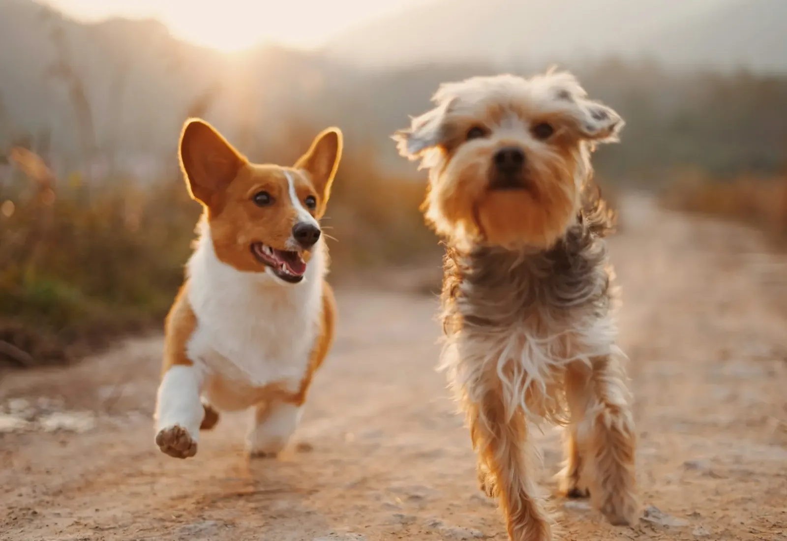
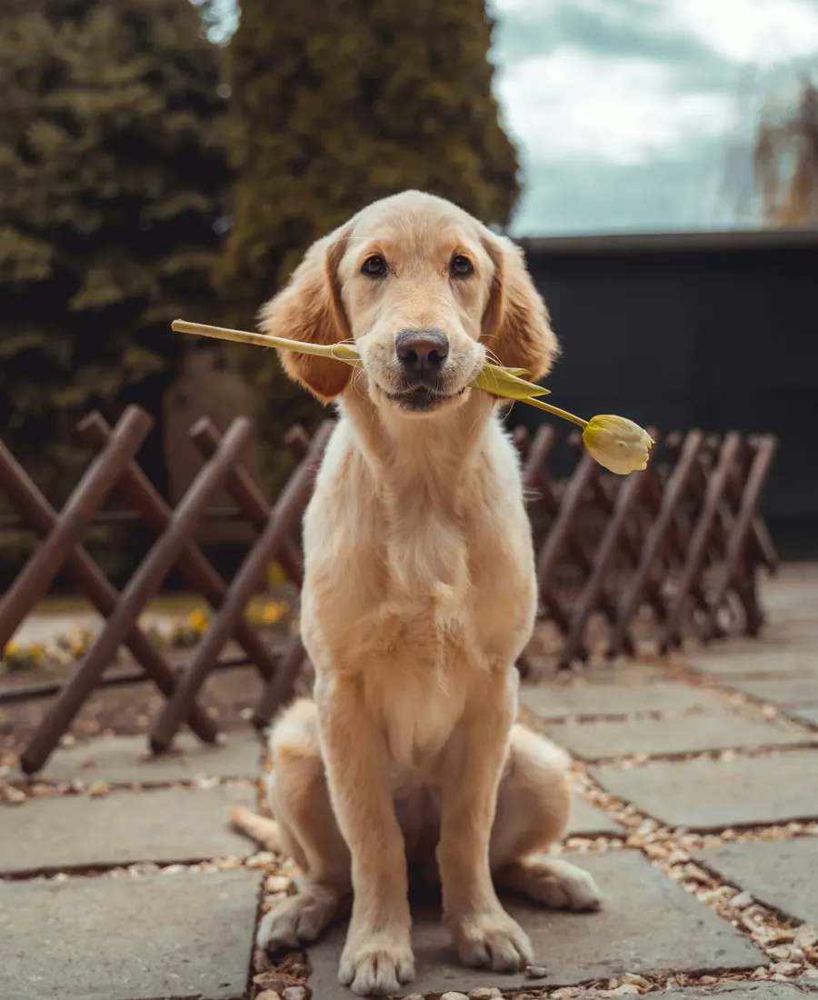
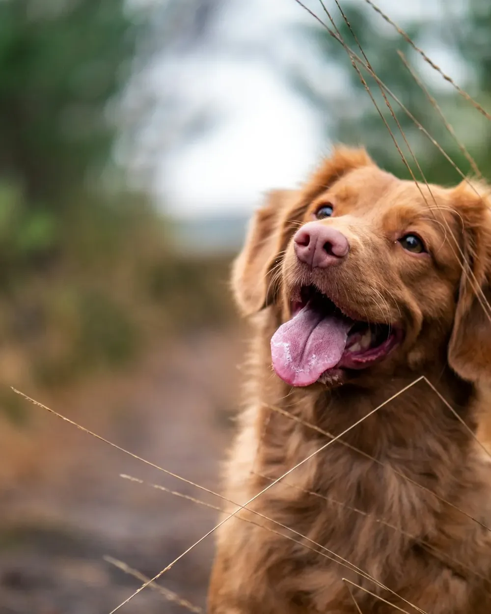
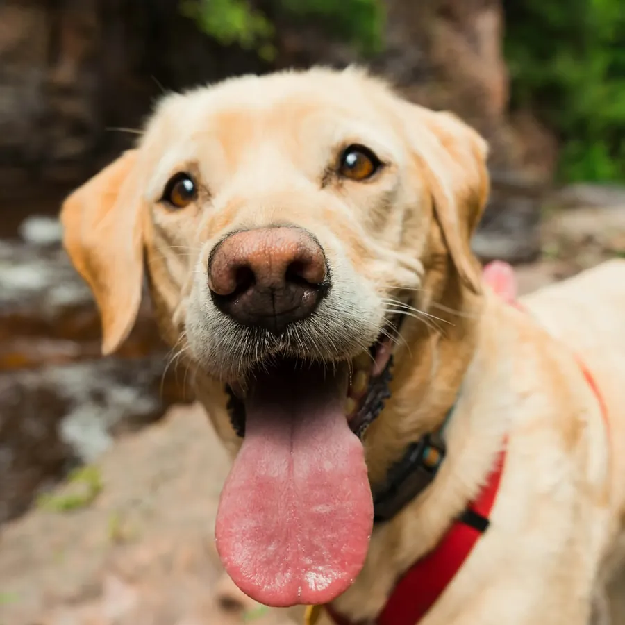
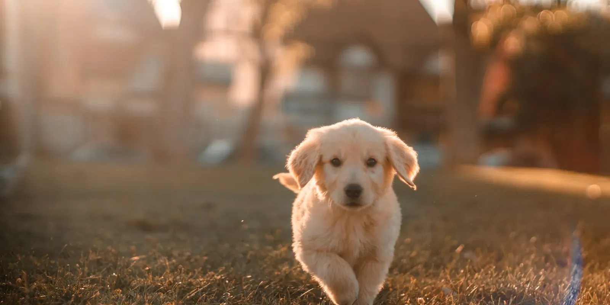

Trekt hij aan de leiband? Daar kunnen we aan werken.
Kwispelcoach Ann begeleidt pups en volwassen honden samen met hun baasje. Geen les voor een hele groep, maar aandacht voor jouw hond en jouw situatie thuis.

Waar zit jij mee?
Tik op wat het dichtst bij jouw situatie komt. Je ziet meteen hoe we ernaar kijken.
Wandelen wordt weer leuk als je hond leert dat een losse leiband loont. We oefenen dat stap voor stap, eerst thuis, dan op straat.
Een pad dat je samen aflegt
Geen vast programma dat voor elke hond hetzelfde is. Dit is wel de volgorde waarin het meestal loopt, in jullie tempo.

- 1
Kennismaking
Je stuurt een bericht en vertelt kort over je hond: leeftijd, ras als je het weet, en waar je graag aan wil werken.
- 2
Eerste gesprek
Ann kijkt naar je hond en naar jullie situatie. Zo weet ze waar het begint en wat haalbaar is.
- 3
Samen oefenen
Korte, duidelijke oefeningen die je thuis kunt volhouden. Jij leert mee, want jij bent het die elke dag met je hond werkt.
- 4
Opvolgen
Hoe gaat het thuis? Wat lukt al, wat nog niet? Je bouwt verder tot het vanzelf gaat.


Persoonlijke begeleiding, voor baas en hond
Kwispelcoach Ann werkt vanuit Kortrijk met pups en volwassen honden. Niet in een grote groep, maar met aandacht voor wat jouw hond nodig heeft.
In de 34 reviews op Google komt één ding steeds terug: de persoonlijke begeleiding. Baasjes voelen zich gehoord, en hun hond ook.
- Afgestemd op jouw hond en jouw thuissituatie
- Oefeningen die je zelf kunt volhouden
- Voor pups en volwassen honden

Een hond die luistert begint bij een baasje dat begrijpt.
Goed om te weten
Staat je vraag er niet tussen? Stuur Ann gerust een bericht.
Is mijn hond niet te oud om nog te leren?
Nee. Ook oudere honden leren nog bij. Het vraagt soms wat meer geduld, maar het kan zeker.
Werk je met groepen of individueel?
De begeleiding is persoonlijk, met aandacht voor jouw hond en jouw situatie. Vraag gerust wat het beste past.
Wanneer begin ik best met mijn pup?
Hoe vroeger, hoe beter. De eerste weken thuis leggen de basis voor later.
Hoe maak ik een afspraak?
Stuur een bericht via WhatsApp of bel naar 0486 44 64 61. Vertel kort over je hond, dan wordt een eerste moment afgesproken.
Vertel over je hond.
Een paar zinnen zijn genoeg: hoe oud, welk ras, en waar je mee zit. Ann laat zo snel mogelijk iets weten.